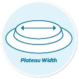

convexity solutions
All bodies
are different.
Convex wafers are designed to
help reduce leakage and simplify
stoma management.
Convex wafers are designed to
help reduce leakage and simplify
stoma management.
Located at the same level as the abdomen skin surface, and does not protrude 6
Stoma pulled into the abdomen below skin level or having little or no spout 7
A stoma which is deep in a skin fold/crease 5
An abdomen requiring firm level of support to stabilize the pouching system 6
Typically used on soft or flaccid abdomens.
Typically used on firm or toned abdomens.
Height of the convex plateau.
Distance across the raised flat surface from edge-to-edge.
• Personalized support
• Enrolling your patients into the me+™ program
• Providing a me+ starter kit and free product samples for your patients
View the Convexity Solutions Detail Aid to learn more about our convex products.
Read now